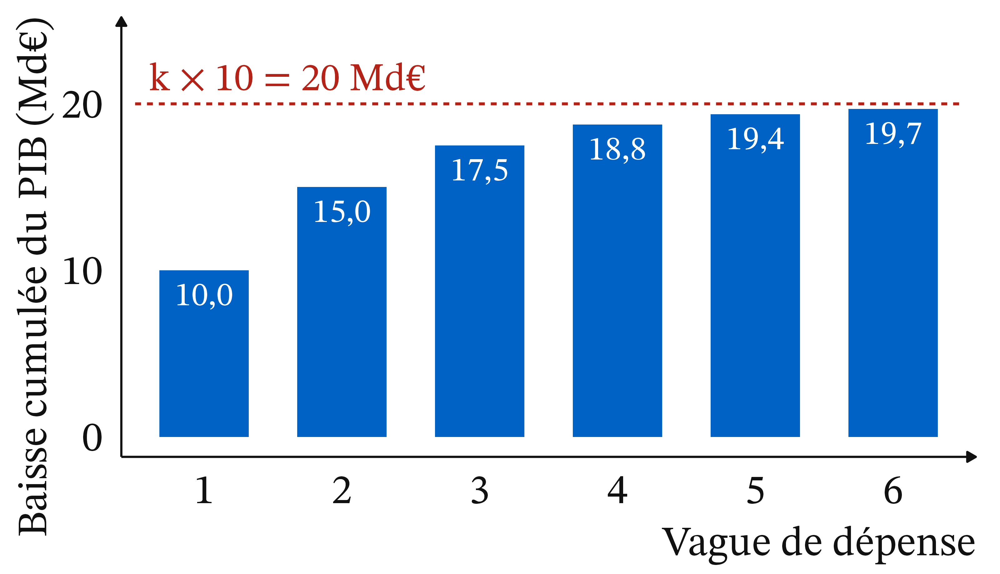
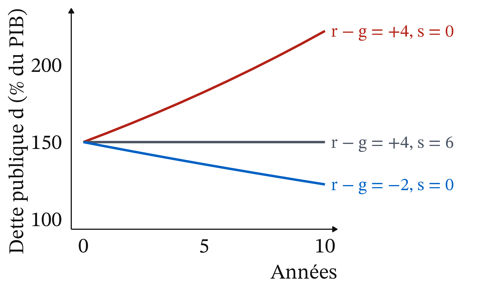
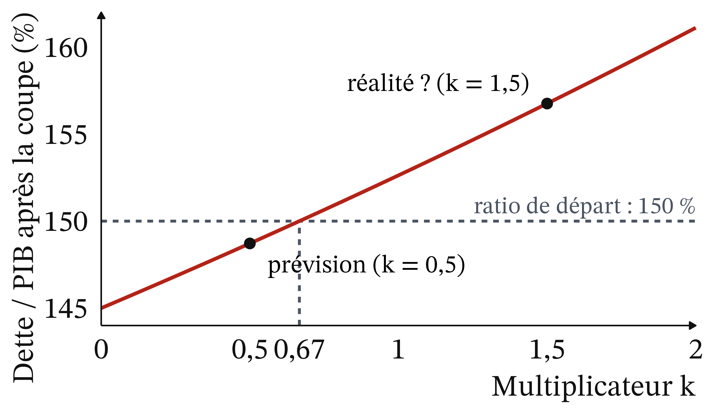

John Maynard Keynes (1936), The General Theory of Employment, Interest and Money · école keynésienne. Une baisse de dépense réduit des revenus, donc d’autres dépenses : son effet sur le PIB est multiplié.
Une baisse de dépense publique réduit le PIB de k fois son montant
Définition 1 (Multiplicateur budgétaire) ΔPIB = k × Δ(dépense publique). Dans le cas le plus simple : k = 1 / (1 − c). Avec c = 0,5, k = 2 ; avec c = 0,8, k = 5.
Chaque vague de dépense vaut la moitié de la précédente

Figure 2
Baisse de 10 Md€, c = 0,5 (exemple fictif). Graphique théorique.
Une coupe de 10 Md€ réduit le PIB de 20 Md€ si c = 0,5
Exemple 1 (Une coupe de 10 Md€, vague après vague) 10 + 5 + 2,5 + 1,25 + … = 10 × 1 / (1 − 0,5) = 20 Md€, soit k = 2.
Avec c = 0,8 : k = 1 / 0,2 = 5, et la même coupe réduirait le PIB de 50 Md€.
Le multiplicateur simple est un maximum
Une partie de chaque euro part en impôts, en épargne ou en importations
La banque centrale peut baisser ses taux
Multiplicateurs estimés : proches de 0,5 en temps normal (Blanchard et Leigh, 2013)
En 2010, chaque point d’austérité a coûté environ 1 % de PIB de plus que prévu
Blanchard et Leigh (2013), American Economic Review · FMI.
26 pays européens, printemps 2010
Un point d’austérité prévue en plus : PIB inférieur d’environ 1 % à la prévision
Si les prévisions supposaient 0,5, le multiplicateur était de l’ordre de 1,5
Taux au plancher, crédit grippé, capacités inutilisées : le multiplicateur était élevé
Taux d’intérêt déjà au plancher
Système financier défaillant : on dépense son revenu du moment
Beaucoup de capacités inutilisées
Zone euro : pas de dévaluation possible
La dette devient lourde si le revenu national croît trop lentement
Evsey Domar (1944), American Economic Review · keynésien de la croissance. Ce qui compte est le poids de la dette dans le revenu national.
Si r dépasse g, la dette grossit plus vite que le PIB.
Si r dépasse g, la dette s’alourdit d’elle-même
Définition 2 (Effet boule de neige) Δd ≈ (r − g) × d − s, où s est le solde primaire en % du PIB (positif = excédent).
Définition 3 (Solde primaire stabilisant)s = (r − g) × d : l’excédent primaire qui maintient d constant.
Avec un écart de 4 points, la dette monte à 222 % en dix ans

Figure 3
Trois trajectoires du ratio dette / PIB depuis 150 % (exemple fictif). Graphique théorique, Δd ≈ (r − g) × d − s.
En récession, il faudrait 12 % d’excédent primaire pour stabiliser la dette
Exemple 2 (d = 150 %, r = 3 %) Récession, g = −5 % : r − g = 8 points, effet boule de neige = 8 % × 150 = +12 points. Avec s = 0, le ratio passe de 150 % à 162 %.
Avec une dette lourde, la croissance compte autant que le solde primaire
Deux autres situations (même dette, d = 150 %)
g = +2 % : effet = +1,5 point ; un excédent primaire de 1,5 % suffit
r = 2 %, g = 4 % : effet = −3 points, même avec un solde primaire nul
Pause
Reprise à 1 h 38.
Une coupe de dépense baisse la dette mais aussi le PIB : lequel gagne ?
k = 0,5 (prévision)
k = 1,5 (réalité)
Dette après la coupe
290
290
PIB après la coupe
195
185
Dette / PIB
148,7 %
156,8 %
Ratio
baisse
monte
Coupe de 10 Md€ ; dette de 300 Md€, PIB de 200 Md€ (exemple fictif).
Sous k = 0,67, la coupe allège la dette ; au-dessus, elle l’alourdit

Figure 4
Ratio dette / PIB après une coupe de 10 Md€ (exemple fictif). Graphique théorique.
La coupe fait monter le ratio si k × d dépasse 1
Exemple 3 (Couper 10 Md€ quand d = 150 %) Le ratio baisse seulement si k × d < 1 (d en nombre : 1,5).
k = 0,5 : 0,75, il baisse. k = 1,5 : 2,25, il monte.
Cette règle vaut à court terme.
Entre 2010 et 2013, la dette grecque en euros baisse mais le ratio gagne 33 points
Dette : de 330 à 321 Md€, car les obligations détenues par des investisseurs privés ont été restructurées en 2012, avec une décote de 53,5 % (MES)
PIB en valeur : −20,3 %
Ratio : de 147,8 % à 180,4 %
(Eurostat, calculs du cours)
La même formule donne +27 points en 2011 et −14 points en 2023
2011
2023
Écart i − croissance
+13,7
−6,7
Effet boule de neige
≈ +20,3
≈ −11,8
Solde primaire s
−2,8 %
+1,9 %
Variation observée de d
+27,3
−13,8
Source : Eurostat (gov_10dd_edpt1, nama_10_gdp), 21/10/2026 ; calculs du cours, sur valeurs non arrondies.
Le taux du marché a atteint 22,5 % en 2012, mais l’État grec n’empruntait presque plus
Figure 5
Taux à dix ans, moyenne annuelle (%). Source : Eurostat (irt_lt_mcby_a), série du 21/10/2026. Taux apparent : jamais plus de 4,7 % de 2009 à 2025.
Avec k × d de 0,75 à 2,25, l’austérité alourdissait la dette à court terme
2010 : d ≈ 1,5 (147,8 %)
Multiplicateur des prévisions : 0,5 × 1,5 = 0,75, la dette s’allège
Multiplicateur proche de 1,5 : 1,5 × 1,5 = 2,25, elle s’alourdit
C’est ce qu’on observe jusqu’en 2013.
En 2013, le chômage dépasse 20 % dans tous les groupes, surtout chez les jeunes
Figure 6
Chômage en 2013 (rouge) et 2025 (bleu), % des actifs. Source : Eurostat (une_rt_a, lfsa_urgaed, lfst_r_lfu3rt), séries du 21/10/2026.
Les jeunes et les moins diplômés ont payé le prix fort
Jeunes : 26,1 % en 2009, 59,2 % en 2013
Moins diplômés : 29,8 %, contre 20,4 % pour le supérieur
Femmes : 31,7 %, contre 24,8 % pour les hommes
Macédoine-Occidentale : 31,6 %
Chômage 2013 (Eurostat, séries du 21/10/2026)
Les créanciers ont partagé la perte, inégalement
Banques et investisseurs privés : décote de 53,5 % en 2012 (MES)
Créanciers publics : environ 289 Md€ prêtés (MES, consulté le 21/10/2026), à taux réduits et durées allongées
Grecs : impôts, coupes, reprise plus lente qu’il n’y paraît
L’analyse établit un multiplicateur sous-estimé, mais pas de « sans austérité » simple
Multiplicateur sous-estimé (Blanchard et Leigh, 2013)
Ratio en hausse tant que r dépassait g
En 2010 : solde primaire de −5,3 % du PIB (Eurostat, calculs du cours), plus d’accès aux marchés ; les plans ont étalé l’ajustement
PIB réel de 2025 : 13,9 % sous celui de 2008 (Eurostat)
Ce qui relève d’un jugement : le rythme, le partage du fardeau, la conditionnalité
Rythme : récession courte et brutale, ou ajustement plus lent et plus coûteux en prêts ?
Partage : annuler plus tôt la dette, au détriment des créanciers ?
Conditionnalité : imposer des réformes à un État souverain ?
Trois écoles : keynésiens, équivalence ricardienne, austérité expansive
Keynésiens : austérité en récession contre-productive, multiplicateur élevé
Barro (1974) : relance par l’emprunt compensée par l’épargne, multiplicateur inférieur à 1
Giavazzi et Pagano (1990) : au Danemark et en Irlande, une forte austérité a été suivie d’une reprise : un ajustement crédible peut rétablir la confiance
Le MES lie son aide à un programme d’ajustement
Le Mécanisme européen de stabilité (octobre 2012) naît d’un traité intergouvernemental, hors cadre de l’Union. L’aide est versée par tranches et peut être interrompue : c’est la conditionnalité.
Le cas grec penche du côté keynésien, sans condamner la consolidation
Blanchard et Leigh : leurs résultats « n’impliquent pas que la consolidation budgétaire soit indésirable ».
Ils mesurent son coût de court terme, pas son bien-fondé.
Ce qu’il faut retenir
Baisse de dépense : PIB réduit de k fois son montant
2010 : k supposé 0,5, plutôt supérieur à 1
Δd ≈ (r − g) × d − s
Une coupe fait monter d si k × d > 1
« A marché » : un jugement normatif
Plan de dissertation : ce que dit l’outil, puis ce qu’il ne tranche pas
Ce que disent les outils : multiplicateur, effet boule de neige, règle k × d
Ce qu’ils ne tranchent pas : rythme, partage du fardeau, conditionnalité
![Trois petits graphiques en lignes, de 2008 à 2025, avec une bande grise de 2010 à 2018. À gauche, en bleu, le PIB réel part de 100 en 2008, tombe à 73 en 2013, reste plat jusqu'en 2016, remonte à 78 en 2019, chute à 71 en 2020, puis remonte à 86 en 2025. Au centre, en rouge, le chômage monte de 10 pour cent en 2009 à 28 pour cent en 2013, puis descend régulièrement jusqu'à 9 pour cent en 2025. À droite, en ambre, la dette publique monte de 111 pour cent du PIB en 2008 à 189 en 2018, atteint 209 en 2020, puis descend à 145 en 2025.](cm8_files/figure-revealjs/fig-grece-1.png)
 1929 · auteur inconnu (archives Bettmann), domaine public, Wikimedia Commons
1929 · auteur inconnu (archives Bettmann), domaine public, Wikimedia Commons 2008 · Eugene Salazar (FMI), domaine public, Wikimedia Commons
2008 · Eugene Salazar (FMI), domaine public, Wikimedia Commons